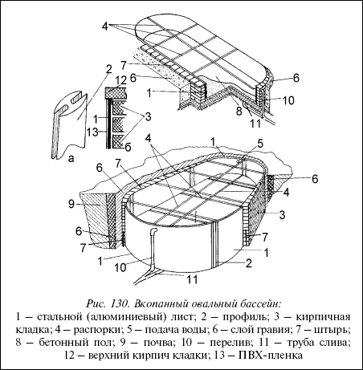
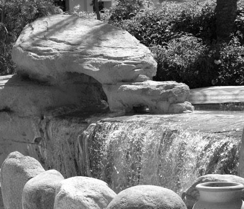
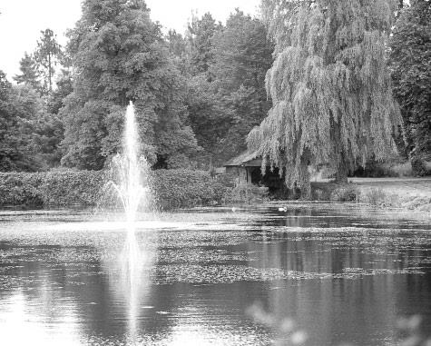

Вкопанный овальный бассейн.

Рассмотрим теперь бассейны, для строительства которых дерево не понадобится.
Проект, который мы предлагаем к рассмотрению (рис. 130),предусматривает бетонный пол, стенки из алюминиевого, стального или дюралевого листа 1, прочностную основу которого составляет кирпичная кладка 3. Бассейн вкопанный, овальный. Котлован, его глубина, будет определяться назначением бассейна– детский, взрослый, бассейн для прыжков и т. д.

Рис. 130. Вкопанный овальный бассейн:
1 – стальной (алюминиевый) лист; 2 – профиль; 3 – кирпичная кладка; 4 – распорки; 5 – подача воды; 6 – слой гравия; 7 – штырь; 8 – бетонный пол; 9 – почва; 10 – перелив; 11 – труба слива; 12 – верхний кирпич кладки; 13 – ПВХ-пленка
Допустим, мы решили выкопать котлован для детского бассейна. Глубина его должна быть 50 см, но с учетом технологических припусков рыть надо на глубину 70–75 см. Когда котлован вырыт, сделан дренаж и обеспечен уклон слоя гравия в сторону слива не менее 6°, укладывается труба слива, которая должна выступать над слоем гравия на 15–17 см. После всего этого происходит заливка дна первым слоем бетона не менее 6 см. Отверстие трубы слива закройте деревянной пробкой, чтобы туда не попал бетон. Разровняйте уложенный слой и накладывайте на него армирующую стальную сетку. Сразу приступайте к разметке будущего периметра кирпичных стен бассейна. При этом оставляйте расстояние между будущей кирпичной кладкой и стеной котлована не менее 7 см. Чтобы не деформировать уже уложенный первый слой бетона, под ногами у вас должен быть кусок толстой фанеры или щит из сбитых досок размером не менее 60x60 см.
РазметкаРазметку обозначайте металлическими штырями длиной 40–45 см и толщиной 1–1,5 см. Штыри забивайте в сырой бетонный слой на 15–20 см молотком на расстоянии 25–30 см друг от друга. Основное назначение штырей – обеспечение прочного соединения пола бассейна с кирпичными стенами. Все штыри войдут внутрь кирпичной кладки стен и это полностью исключит отслаивание кирпичных стен от пола.


Установив все штыри, заливаем на армирующую сетку второй слой бетона толщиной 7–8 см.
Разравниваем дно рейкой. При этом следим, чтобы все вбитые штыри сохраняли строго вертикальное положение.
Через 2–3 дня, когда бетон на полу затвердеет, можно приступать к монтажу каркаса стен бассейна из алюминиевых, дюралевых или стальных (нержавеющая сталь) листов. Соединить листы между собой необходимо с помощью профилей (фрагмент «а»). Край листа вставляется в профиль и уплотняется прокладками (резина). Штыри должны находиться на внешней стороне каркаса. Стальные листы должны как бы упираться в них. После этого наружная поверхность листов хорошо протирается обезжиривающим веществом (ацетоном). Изнутри (алюминиевые, дюралевые, стальные) листы фиксируются распорками 4 для временной жесткой фиксации.
Кладка стенПриступаем к кладке кирпичных стен. Кирпичи кладутся поперек стены бассейна. Все острые кромки кирпичей, которые выступают внутрь бассейна (к листам), должны быть срублены или разрушены молотком. При укладке проектируем «окна» для подвода подающей трубы и трубы перелива 10.
Последний ряд кладки должен быть осуществлен таким образом, чтобы кирпич закрыл верхнюю кромку (алюминиевого, дюралевого, стального) листа.
Не убирая распорки, 2–3 дня ждем, пока кладка «схватится». После этого засыпаем гравий в дренажный зазор между кирпичной кладкой 3 и стенками котлована. Во время засыпки слой гравия уплотняется (слегка утрамбовывается). Убираем распорки 4. Высверливаем в листах отверстия для трубы подачи воды 5 и трубы перелива 10. Разметки в данном случае не потребуется, т. к. высверливание будет происходить напротив оставленных в кирпичной кладке «окон». Края отверстий зачищаем надфилем и наждачной бумагой.
Совет
После зачистки устилаем чашу бассейна ПВХ-пленкой. Разравнивание советуем начинать с середины бассейна, деревянными брусками прижать пленку к стенкам и после этого фиксировать (закреплять) края пленки на верхнем кирпичном ряду. Этим самым уже начинается облицовка бассейна, которую вы проводите в соответствии с избранным проектом и имеющимися материалами.